月曜日の便り。エボラDRC——確認896例・死者232名（6/17時点）、そのなかで75名の医療従事者が感染し17名が死亡した。最前線が失われようとしている。WHOは史上初のフィロウイルス包括ガイドラインを発行し対応を急ぐが、ワクチンも承認済み治療薬もない。SMAの世界ではアピテグロマブFDA最終審査（PDUFA 9/30）まで100日超、リスジプラム錠剤がフランスに届き、MANATEE試験が今週土曜（6/27）に完了する。Precision NeuroscienceがMedtronicと手を組み、Neuralinkが量産体制へ進む。EeroQの電子ヘリウム量子ビットとIBMのAI誤り訂正が量子フロンティアを更新し、Euclid Q2が今週水曜（6/24）に銀河バルジのデータを届ける。「仮想脳コピーは予想より近い」と科学は告げ、認知主権の法的空白が問われ始めた。問いと前進が並走する週の始まり。
DRCエボラ（ブンディブギョ型）は6月17日時点で確認例896件・死者232名に達した。6/15比で+59例+36死者と週50件超ペースの拡大が続く。最大の懸念は医療従事者への大規模感染で、75名が感染し17名が死亡（Al Jazeera 6/19報道）。有効なワクチン・治療薬が存在しないブンディブギョ型PHEICのもと、感染対応の最前線が失われつつある。WHOは6月17日に史上初のフィロウイルス包括的臨床管理ガイドラインを発行し対応強化を急ぐ。イツリ州のみで767例・20保健区が影響を受けており、地域の医療インフラが空洞化しつつある。「ピーク未達」との警告のもと、最前線を守る人が最前線で倒れている。
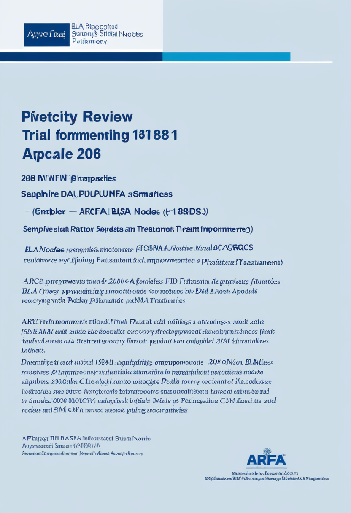
Scholar RockのアピテグロマブBLA（生物製剤承認申請）はFDAが優先審査を付与し、PDUFA（最終判定日）は2026年9月30日に設定された。EMAもMAA受理済み。第3相SAPPHIRE試験（188名、SMA II/III型）ではプラセボ比で運動機能が有意に改善し、早期治療開始例でより高い効果が示された。MDA 2026カンファレンスで最新データが発表され、「神経を守る」既存薬に「筋肉を取り戻す」新薬が加わる可能性への期待が高まった。FDA判定日まで100日超——SMA治療の風景を変えうる節目が迫っている。
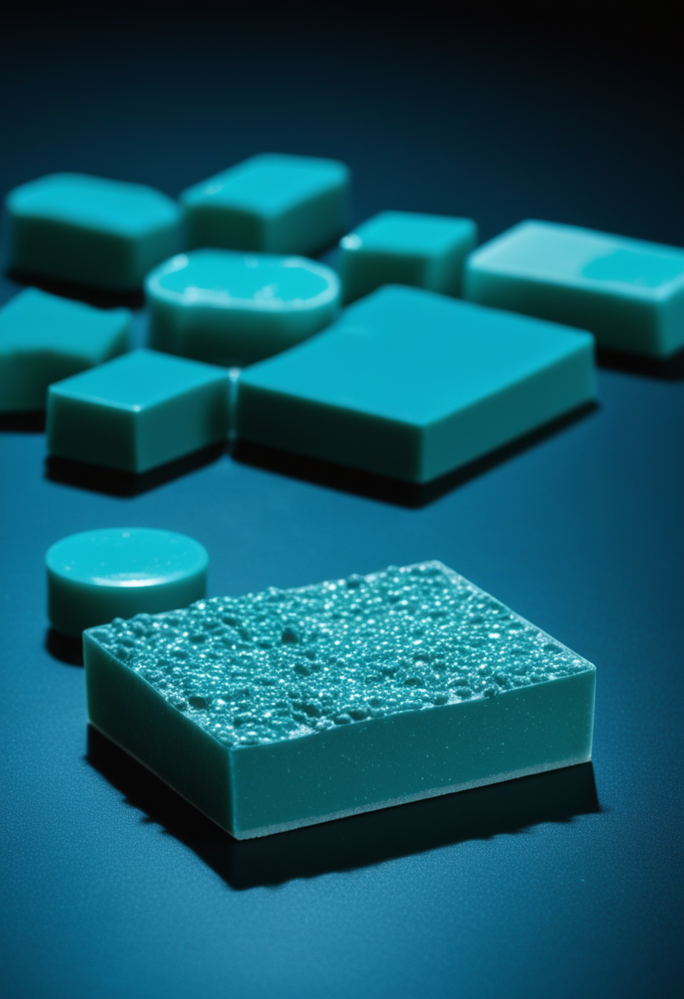
2026年6月9日からフランスの薬局でリスジプラム（エブリスディ）の錠剤製剤（フィルムコーティング錠）が利用可能となった。I・II・III型SMA患者が対象で、従来の経口液体製剤に比べ服薬コンプライアンスの向上が期待される。特に小学生以上の患者にとって日常の服薬負担が軽減され、生活の質改善につながる。EU各国への展開が次の焦点であり、既存のSMN2スプライシング修飾薬がより飲みやすい形になることは治療継続の観点でも重要な前進だ。
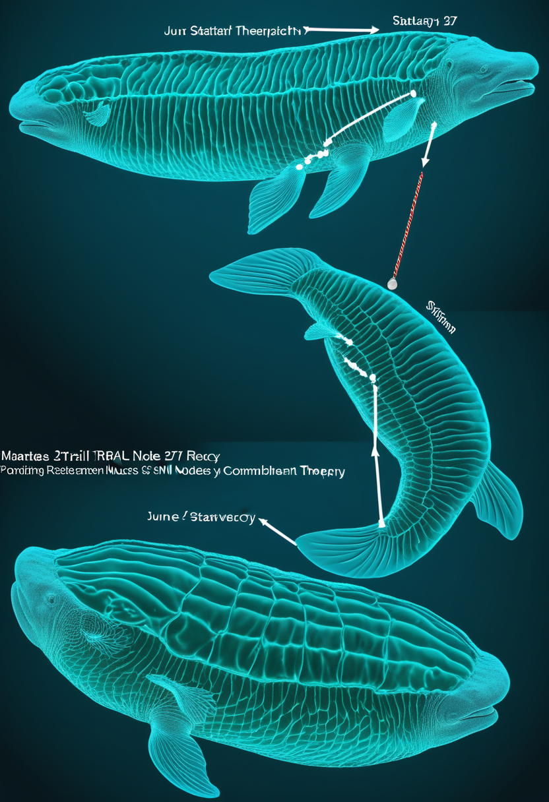
Roche主導のMANATEE試験（NCT05115110）は2026年6月27日（土）を完了予定日とし、今週末に結果が揃う。GYM329（骨格筋標的抗ミオスタチン抗体）とリスジプラム（エブリスディ）の併用安全性・有効性を評価し、SMN依存性療法と筋肉標的療法を組み合わせる次のSMAパラダイムを検証する。アピテグロマブとともに「筋肉を取り戻す」治療の二本柱が同時期にエビデンスを積んでおり、今週はその結果が揃う歴史的な節点となる可能性がある。
アピテグロマブFDA判定（9/30）まで100日超、リスジプラム錠剤がフランスに届き、MANATEEが今週土曜に完了する ── 「神経を守る」から「筋肉を取り戻す」へのSMA治療転換が三つの軌道で同時進行する月曜日。
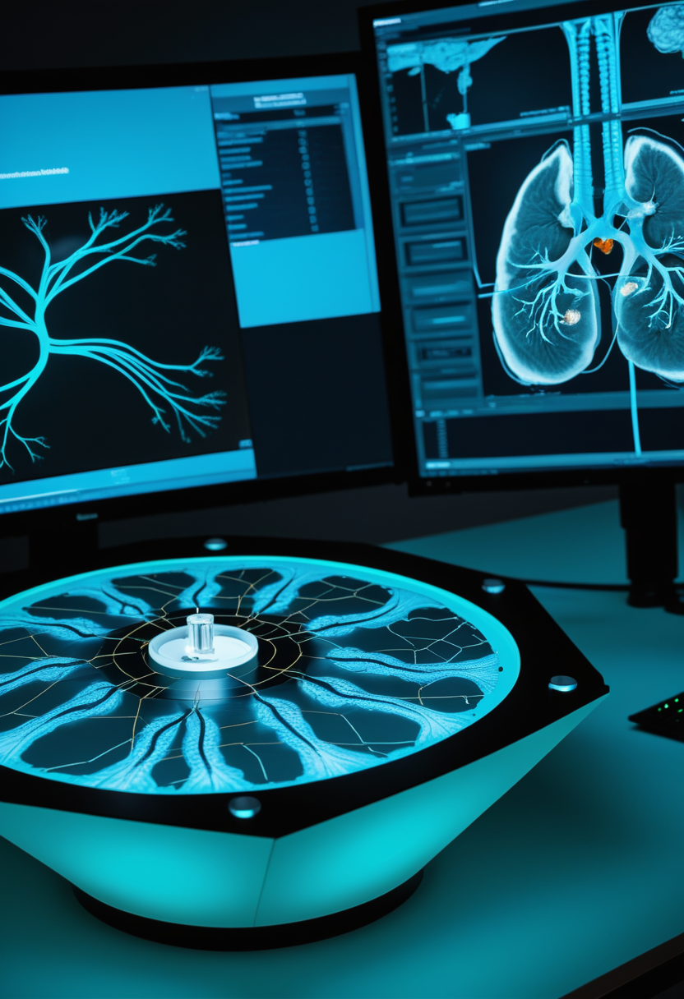
Precision Neuroscienceは高バンド幅BCI「Layer 7 Cortical Interface」の初ヒト試験（5名）で開頭手術不要の高密度皮質記録を実証した後、2026年1月12日にMedtronicとの戦略的提携を発表した。MedtronicのStealthStationシステム（多くの主要神経外科施設に既設）への統合により、BCIの商業展開への現実的な経路が開けた。Neuralink・Synchronに次ぐ第三の柱として台頭し、BCIの競争が「実証段階」から「規制・商業段階」へと移行する動きが加速している。
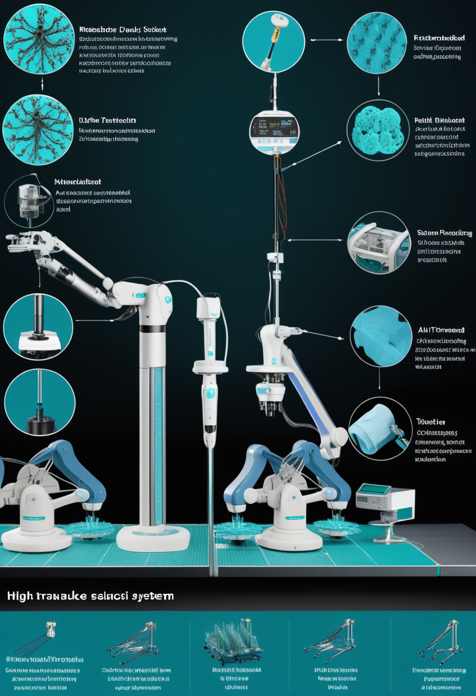
NeuralinkはBCIデバイスの大量生産と完全自動化手術への2026年移行を進行中だ。電極糸が硬膜を切除せずに直接貫通する新技術は手術安全性を大幅改善する。現在21名のNeuronautsが試験に参加し、18/20名で信号品質が改善。FDAは音声回復用途でブレークスルーデバイス指定を付与済みで、ALS患者の思考による文字入力（最高40WPM）なども実証されている。前号（6/21号）でカバーした$650Mの資金を背景に、BCIが「研究機器」から「量産可能な医療機器」へと転換するフェーズに入った。
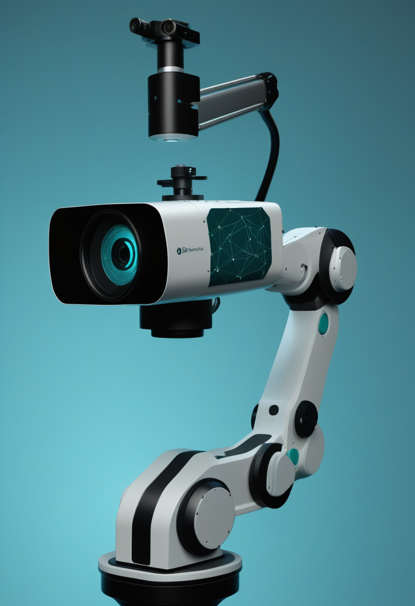
MDPI Sensorsに掲載された2026年6月の研究では、赤外線画像処理に基づく軽量幾何フレームワークで競合水準の高精度3D視線追跡を実現した。VR・ヒューマンコンピューターインタラクション・臨床応用での角度精度が向上し、運動障害者向け支援ロボットアームの視線制御への応用も広がっている。眼球運動のみで日常機器を操作する時代が近づいており、BCI各社の普及とも連動して「視線で世界を操る」インターフェースが基礎研究から実用へと収束しつつある。
Precision Neuroscience × Medtronic提携でBCIが商業インフラと連結し、Neuralink 21名・18/20名信号改善・FDAブレークスルーで量産フェーズへ踏み込み、MDPI視線研究が「視線で操る」日常を近づける ── 今週のBCIは規制・商業・基礎の三層で同時前進。
DRCエボラ（ブンディブギョ型）は6月17日時点で確認例896件・死者232名（前号比: +59例 +36死者）。最大の懸念は医療従事者75名の感染と17名の死亡だ（Al Jazeera 6/19報道）。WHOとAfrica CDCは「ピーク未達」と警告し、ヘルスワーカー保護を最優先課題とする。イツリ州のみで767例・20保健区が影響を受け、地域医療インフラの空洞化が進む。有効なワクチン・治療薬が存在しないブンディブギョ型のPHEICのもと、最前線を守る人材が最前線で失われている。
WHOが全フィロウイルス（全エボラ型・マールブルクウイルス）を網羅する史上初の包括的臨床管理ガイドラインを2026年6月17日に公表した。ブンディブギョ型には承認済みワクチン・治療薬が存在しないため、支持療法・感染制御の標準化が急務だった。医療従事者感染の急増を受け、感染防護プロトコルの徹底と個人防護具の確保が世界的緊急課題となった。MSFはDRC東部に追加医療チームを投入中で、今後のPHEIC対応の基盤となる歴史的な文書として評価される。
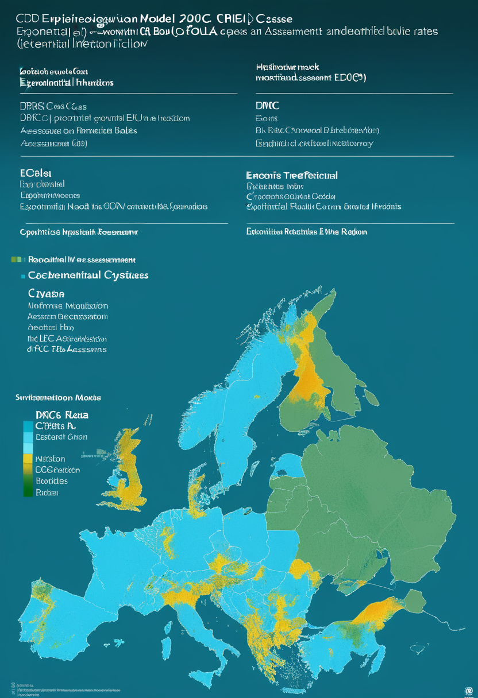
CDCはMMWR（2026年6月号）にてDRCエボラ流行の拡大モデル予測シナリオを公開した。現行対応が不十分な場合、流行規模が数千例に達する可能性が示され、介入強化の緊急性を科学的に裏付けた。ECDC（欧州疾病予防管理センター）も独自リスク評価を公表し、EU加盟国の水際対策強化を呼びかけている。医療従事者への感染が加速すれば応答能力の空洞化が急進し、モデルの上限シナリオへの接近リスクが高まる。数字が語る可能性の重さを前に、国際社会は行動を問われている。
医療従事者17名の死亡が最前線を空洞化し、WHOが史上初のフィロウイルスガイドラインを発行し、CDCモデルが介入不足なら数千例と警告する ── 基盤の崩壊を防ぐ戦いが最も重要な今週。
ESAユークリッド宇宙望遠鏡の第2次データ公開（Quick Data Release 2）が今週水曜6月24日に予定されている。「Euclid Galactic Bulge Survey（EGBS）」として2025年3月23日に取得した4.8平方度の高解像度VIS画像が含まれ、赤方偏移z=2（宇宙誕生から約38億年後）までの銀河観測データを放出する。本格コスモロジーデータリリース（暗黒エネルギー・暗黒物質マッピング）は2026年10月予定で、Q2はその重要な前段となる。NASAナンシー・グレース・ローマン望遠鏡（2027年打ち上げ予定）との連携も視野に入る。
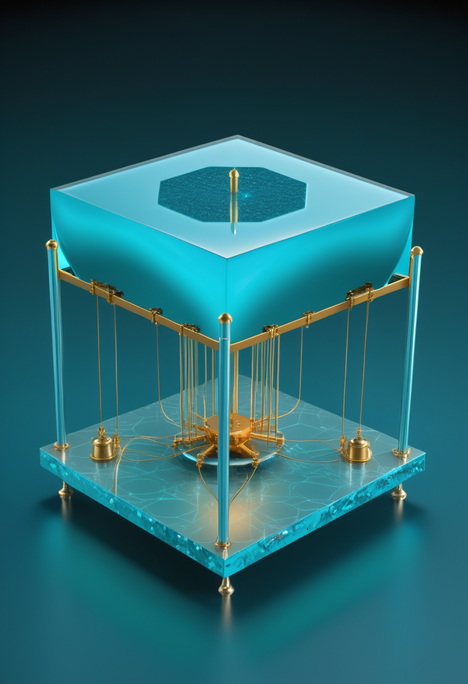
EeroQがNature Physicsに掲載した論文で、液体ヘリウム表面に浮かぶ電子を量子ビットとして利用する「electron-on-helium（eHe）qubit」の強結合を世界で初めて物理的に実現したと報告した。将来の百万量子ビット計算機を目指す「光トラップ」技術との組み合わせにより、スケーラブルな量子ハードウェアへの道が拓かれる。材料の純度が極めて高くデコヒーレンスが最小化される点でシリコンや超電導体とは異なる新アプローチだ。多様なハードウェア経路が開拓されている2026年の量子コンピューティングを象徴する成果となった。
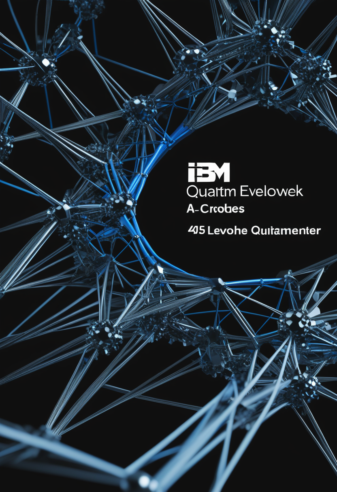
IBMはオープンソースAIフレームワーク「OpenEvolve」を用いて量子誤り訂正コードを465個新たに発見した。フォールトトレラント量子計算の実現に不可欠なエラー訂正問題にAIが切り込む手法として注目される。Atom Computing（物理量子ビット1200超）とPhasecraftの材料科学向け提携、Oxfordの新型シュレーディンガー猫状態実現など、2026年6月は量子コンピューティングの突破口が相次いでいる。EeroQのハードウェア革新と合わせ、量子計算の「ハード」と「ソフト」が同時に進化する週となった。
Euclid Q2が明後日水曜日に銀河バルジの暗黒宇宙データを届け、EeroQが電子ヘリウム量子ビットをNature Physicsに刻み、IBMのAIが誤り訂正コードを465個発見する ── 今週の畏敬はコスモスと量子が同時に天井を押し上げた。
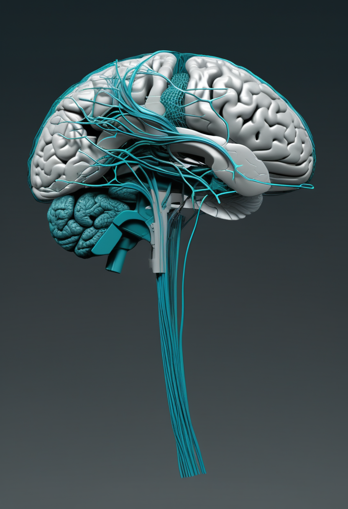
Medical Xpress（2026年5月）が報じた研究によれば、構造・機能データを統合した個人化デジタル脳ツインが「予想よりはるかに早期に」実現可能との見通しが示された。計算モデルは疾患軌跡・治療応答のシミュレーションを可能にし、植物状態（unresponsive wakefulness）の診断支援への応用も査読論文で議論される。前号（6/21号）で報じたEon Systemsのショウジョウバエ脳アップロードは、このトレンドの直接的な実証事例として位置付けられる。「デジタルの自分」という概念が、哲学的問いを超えて医療・診断・倫理の現場に降り始めている。
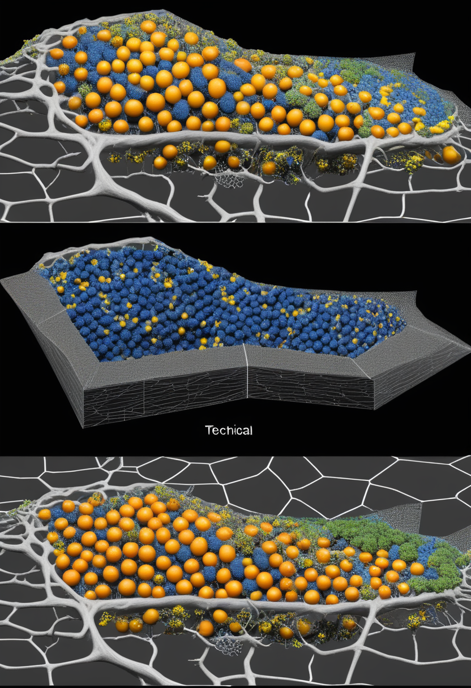
Singularity Hubは2026年4月11日、「ヒト脳のデジタルツインをより良く構築する方法」と題した解説を公開した。現在の課題として①皮質接続マップの不完全性 ②スケールギャップ（ニューロン→回路→行動） ③リアルタイム更新コストの三壁が挙げられる。電子顕微鏡コネクトミクスとAI統合によりこれらの壁が崩されつつあり、Eon Systemsのショウジョウバエ実験はその実証事例だ。次のマイルストーンはマウス脳（約7,000万ニューロン）のデジタル化で、560倍の挑戦が待つ。
ORF Onlineは、BCI・デジタル脳ツインが「認知主権（cognitive sovereignty）」という新概念を生み出していると論じる。脳データの収集・所有・売買をめぐる法的空白は、プライバシーを超えた個人アイデンティティの侵害リスクを孕む。PLOS Biology掲載の査読論文も認知強化BCIの倫理的考慮を詳述し、社会的議論の喚起を訴えている。「デジタルの自分」が医療・商業・研究の各領域で生成される時代に、それを所有・管理・削除する権利の枠組みがまだ存在しない。技術は走り、制度が追いかける。
Medical Xpressが「仮想脳コピーは予想より近い」と告げ、Singularity Hubが技術的三壁を整理し、ORFとPLOSが認知主権の法的空白を問う ── 「デジタルの自分」という問いに技術・工学・倫理が今週も三方向から迫ってくる。
今日の世界は、75名の医療従事者がエボラDRCの最前線で感染し17名が倒れた月曜日だった。ワクチンも承認済み治療薬もなく、WHOは史上初のフィロウイルスガイドラインを発行して応じた。SMAの世界ではアピテグロマブの判定日（9/30）が100日先に迫り、リスジプラムの錠剤がフランスの薬局に届き、MANATEEが今週土曜に完了する。Precision NeuroscienceがMedtronicと手を組んでBCIを商業インフラに乗せ、Neuralinkが21名のNeuronautsとともに量産フェーズへ踏み込んだ。EeroQが電子ヘリウム量子ビットを初物理実現し、IBMのAIが誤り訂正コードを465個新発見した。Euclid Q2が明後日水曜日に暗黒宇宙の断片を届ける。「仮想脳コピーは予想より近い」と科学が告げる一方で、認知主権という法的空白が広がる。
月曜日の始まり。倒れた人の分まで、前へ。おはようございます。